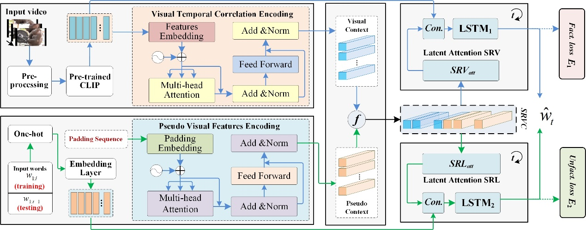
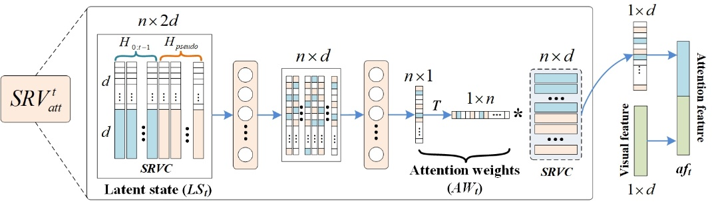
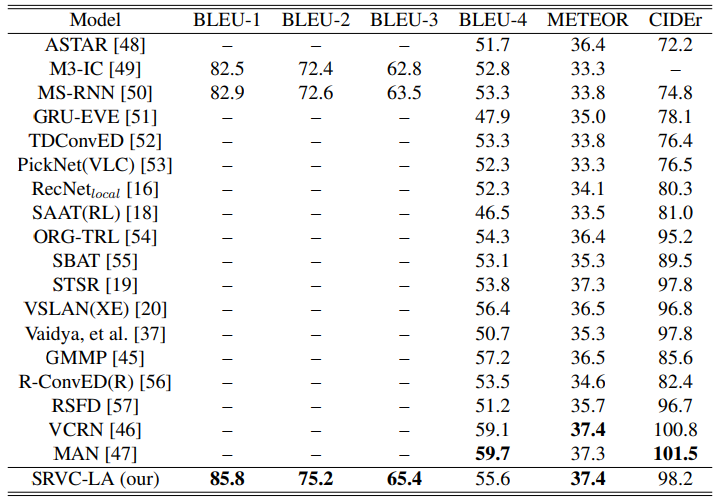
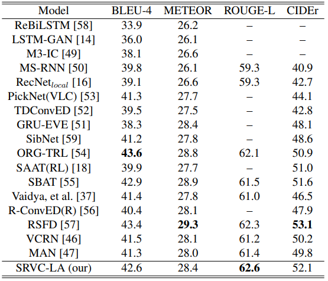
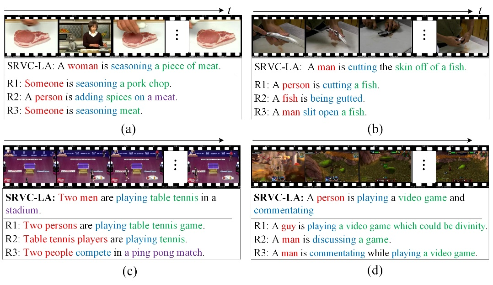

SRVC-LA: Sparse regularization of visual context and latent attention based model for video description
Pengjie Tang, Jiayu Zhang, Hanli Wang, Yunlan Tan, Yun Yi
Overview:
Video description is one of the important generative tasks, which is to summarize the visual content and translate it into natural language. Nowadays, an increasing number of effective models have been developed for this task. Nevertheless, the visual and language features are combined and represented in a dense multimodal feature space in popular works, making it easy for the model to become stuck in over-fitting. This results in the model lacking sufficient generalization ability. A model with sparse regularization of visual context and latent attention (SRVC-LA) is proposed in this work. By encoding a padding sequence corresponding to the encoded video and the following concatenation of visual contextual features, the visual regularization context is extracted for vision attention sparsity. Then it is attended by a latent attention mechanism, where the visual regularization context and the previous hidden state are combined and attended for multi-modal semantic alignment. Additionally, the visual and language features are combined with their respective latent attention features and fed to two branches for semantic compensation. Experiments on MSVD and MSR-VTT2016 datasets are conducted, and better performances are achieved compared to the baseline and other models, demonstrating the effectiveness and superiority of the proposed model.
Method:
As shown in Fig. 1, the video to be described is pre-processed for frame selection and cropped to reduce visual redundancy. The picked frames are then fed to the pre-trained CLIP model to extract visual features, following which the extracted feature sequence is fed to a Transformer encoder to represent visual temporal correlation. Simultaneously, a padding sequence with the length of the video is fed to another Transformer encoder to extract pseudo features, which are then combined with the visual features to obtain sparse regularization of visual context (SRVC). Next, the obtained SRVC is focused by our proposed latent attention unit, and the attended feature will be combined with visual or language features for decoding by their respective LSTM. During training, all modules are optimized jointly. It deserves mention that the CLIP model is frozen in the entire training period. On one hand, the utilization of large-scale models like CLIP for joint optimization is challenging due to constraints in hardware capabilities. On another hand, the features extracted by the pre-trained CLIP are sufficiently abstract that further fine-tuning may deteriorate the performance, because the model may overfit the existing training data, resulting in catastrophic forgetting of original knowledge in CLIP. During testing, the outputs from the two LSTMs are fused to collaboratively predict words one by one.

Fig. 1 The overview of the proposed sparse regularization of visual context and latent attention model for video description (SRVC-LA).
The pipeline for latent attended feature is presented in Fig. 2. At the 𝑡𝑡ℎtime step, 𝑆𝑅𝑉𝐶 is concatenated to the previous hidden state of LSTM to form latent state (which is marked as 𝐿𝑆𝑡 for convenience).

Fig. 2 The pipeline of latent attention for sparse regularization of visual context.
Result:
Experiments are implemented and conducted on two public datasets including MSVD and MSR-VTT2016. Additionally, the metrics including BLEU, METEOR, ROUGE-L and CIDEr are used to evaluate the proposed model. The performance of the proposed model and other works are as shown in Table 1 and Table 2.
Table 1 Performance comparison to the other popular models on MSVD dataset (“–” denotes the result of the corresponding model is not reported).

Table 2 Performance comparison to the other models on MSR-VTT2016 dataset (“–” denotes the result of the corresponding model is not reported).

As shown in Fig. 3, a few examples of references and generated sentences with the proposed model are presented to reveal the effectiveness of the proposed model.

Fig. 3 Examples of references and generated sentences with the proposed SRVC-LA model (where (a∼b) are examples from MSVD, and (c∼d) are from MSR-VTT2016. “R” denotes reference. The part marked in red in sentences is the subject, blue is the predicate, and green and purple are the other components.)
Source code:
原站插图：图片暂留白SRVC-LA1.0.zip
Citation:
Pengjie Tang, Jiayu Zhang, Hanli Wang, Yunlan Tan, Yun Yi, SRVC-LA: Sparse regularization of visual context and latent attention based model for video description, Neurocomputing, vol. 630, pp. 129639:1-13, May 2025.